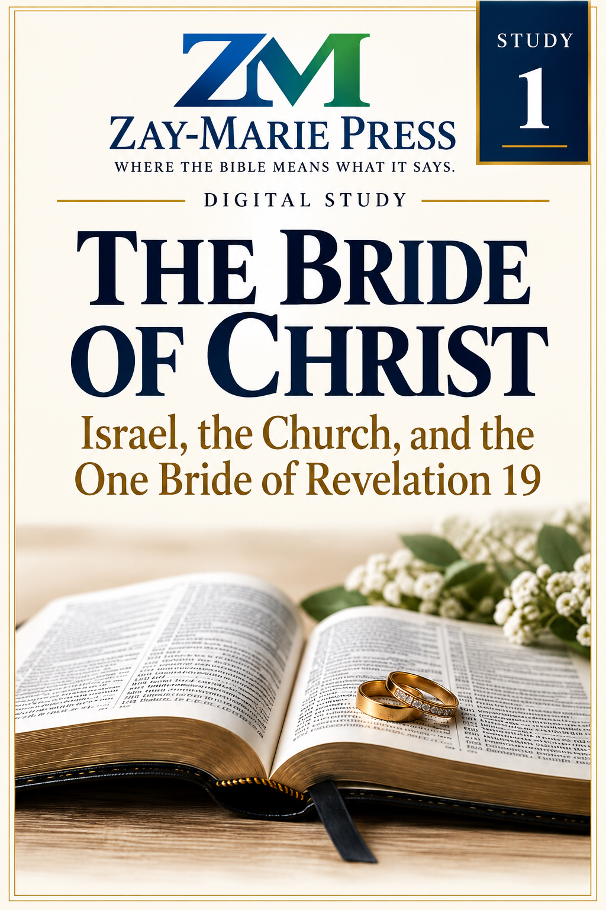
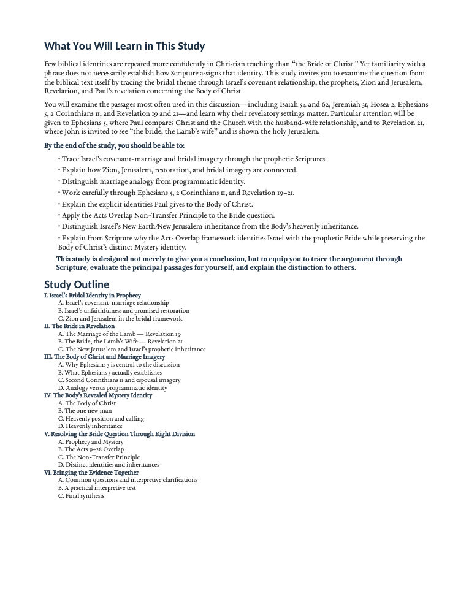
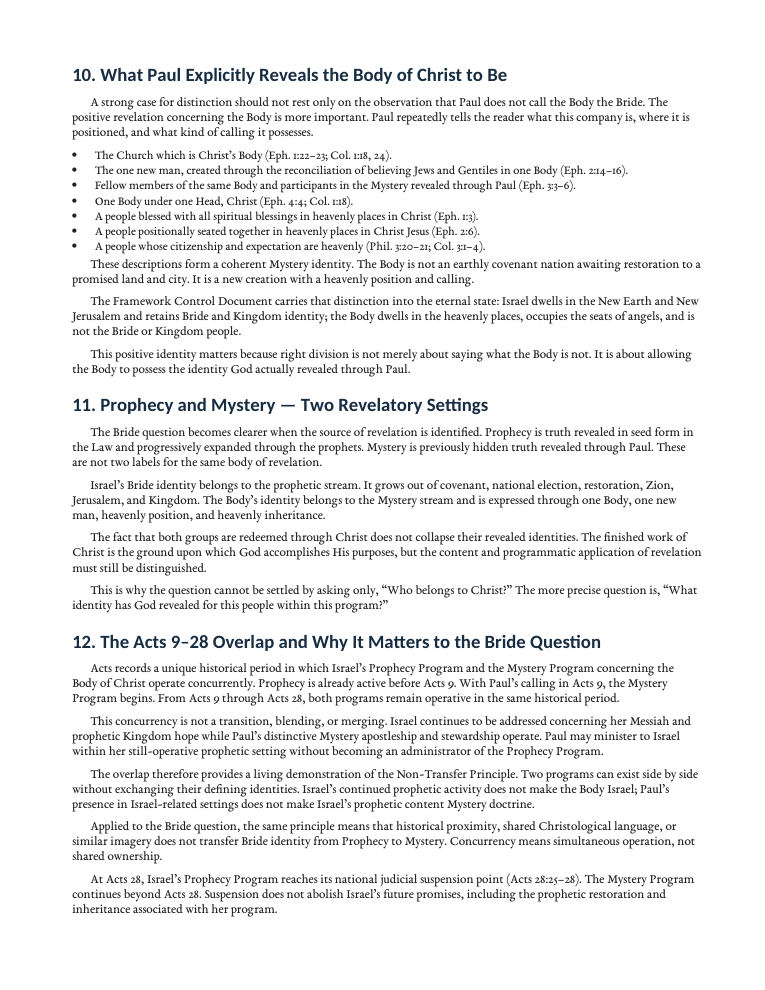
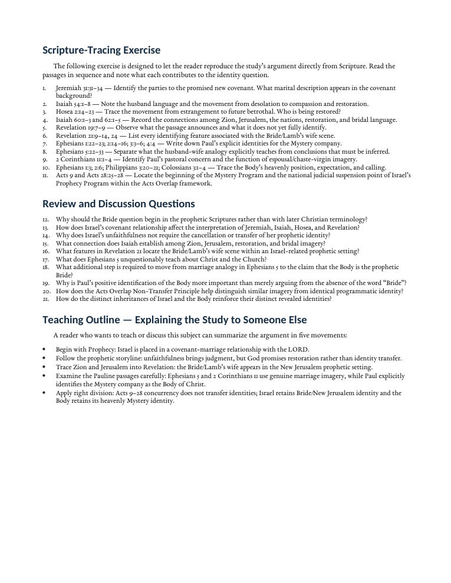

The Bride of Christ
Israel, the Church, and the One Bride of Revelation 19
A Biblical Examination of Identity, Audience, and Prophetic Fulfillment
Trace the biblical bridal theme from Israel’s covenant relationship through the prophets and Revelation, then examine the Pauline passages commonly used to identify the Body of Christ as the Bride. This study distinguishes marriage imagery from programmatic identity while preserving the distinct identities and inheritances Scripture assigns to Israel and the Body of Christ.
Why Does the Identity of the Bride Matter?
“The Bride of Christ” is one of the most familiar expressions in Christian teaching, but familiarity with a theological expression does not by itself establish how Scripture assigns that identity.
This study begins with Israel’s covenant relationship and follows the bridal theme through Isaiah, Jeremiah, Hosea, Zion and Jerusalem, and ultimately Revelation 19 and 21. It then examines Ephesians 5 and 2 Corinthians 11 to determine what Paul’s marriage imagery establishes concerning Christ and the Church—and whether that imagery transfers Israel’s prophetic Bride identity to the Body of Christ.
Follow the Biblical Evidence From Prophecy to Mystery
Israel’s Covenant-Marriage Relationship
Trace the bridal framework through Israel’s covenant history and the prophetic promises of judgment, restoration, and future faithfulness.
Zion, Jerusalem & the Bride
Follow the relationship among Zion, Jerusalem, restoration, Kingdom hope, and bridal imagery from Isaiah into Revelation.
The Marriage of the Lamb
Examine Revelation 19 and 21 in their prophetic setting and consider Revelation’s own identification of the Bride/Lamb’s wife.
Ephesians 5 & 2 Corinthians 11
Work carefully through the major Pauline passages used to support the traditional identification of the Church as the Bride.
Analogy vs. Programmatic Identity
Learn why genuine marriage imagery does not automatically transfer an identity, covenant, promise, or inheritance from one revealed program to another.
The Acts Overlap & Non-Transfer Principle
See how Prophecy and Mystery operate concurrently during Acts 9–28 while retaining their distinct identities, promises, callings, and destinies.
Examine the Passages for Yourself
Jeremiah 31:31–34
Establishes the promised New Covenant specifically with the house of Israel and the house of Judah.
Isaiah 54:1–8
Uses husband-and-wife imagery to describe Israel’s estrangement, compassion, and promised restoration.
Hosea 2:14–23
Portrays Israel’s future restoration through renewed betrothal and covenant relationship with the LORD.
Isaiah 60–62
Connects Zion and Jerusalem with restoration, Kingdom glory, and explicit bridegroom-and-bride imagery.
Revelation 19:7–9
Announces the marriage of the Lamb and the preparation of His wife within Revelation’s prophetic setting.
Revelation 21:9–14, 24
Identifies the Bride, the Lamb’s wife, with the New Jerusalem and its distinctly Israel-related features.
Ephesians 1–5
Establishes the Body’s revealed Mystery identity and provides Paul’s husband-and-wife analogy in Ephesians 5.
2 Corinthians 11:1–4
Uses espousal imagery to express Paul’s pastoral concern for the Corinthian believers’ faithfulness to Christ.
Analogy and Identity Must Not Be Confused
“An analogy can be true and powerful without requiring every feature of the comparison to become a permanent programmatic identity.”
Ephesians 5 teaches profound truths concerning Christ’s love, sacrificial care, sanctifying purpose, and unity with the Church. The interpretive question is whether those truths also assign the Body of Christ the prophetic Bride identity established elsewhere in Scripture. The study examines that question by distinguishing genuine biblical analogy from the programmatic identities Scripture explicitly reveals.
Preview the Study Before You Purchase
Click any page preview to view it at full size.
{kind=link}

What You Will Learn & Study Outline
See the study’s learning goals and the six-part structure used to trace the Bride question from Israel’s prophetic identity through Revelation and Pauline revelation.
{kind=link}

The Body’s Mystery Identity & Acts Overlap
Preview the study’s positive treatment of the Body of Christ, Prophecy and Mystery, and the concurrent operation of both programs during Acts 9–28.
{kind=link}

Scripture Tracing, Review & Teaching
See how the study moves beyond reading into Scripture tracing, discussion questions, and a teaching outline designed to help readers reproduce the argument.
A Focused Study Built for
Understanding and Teaching
14-Page In-Depth Biblical Study
A focused examination that develops the subject through sustained biblical argument rather than a brief overview.
15 Teaching Sections
Progress through the issue step by step, building the biblical case from foundational passages to final synthesis.
Study Summary & Key Distinctions
Reinforce the central conclusions and the interpretive distinctions necessary to understand the subject clearly.
Scripture-Tracing Exercise
Follow the argument directly through Scripture and examine how the principal passages contribute to the conclusion.
Review & Discussion Questions
Test comprehension, revisit important interpretive issues, and support individual or group discussion.
Teaching Outline
A ready framework for explaining the study’s biblical argument clearly and systematically to someone else.
Six Guided Further-Study Investigations
Extend the study through targeted biblical questions designed for deeper independent investigation.
Final Synthesis Exercise
Bring the evidence together and articulate the study’s major conclusions from Scripture in your own words.
The Bride of Christ
14-page digital PDF · For personal use